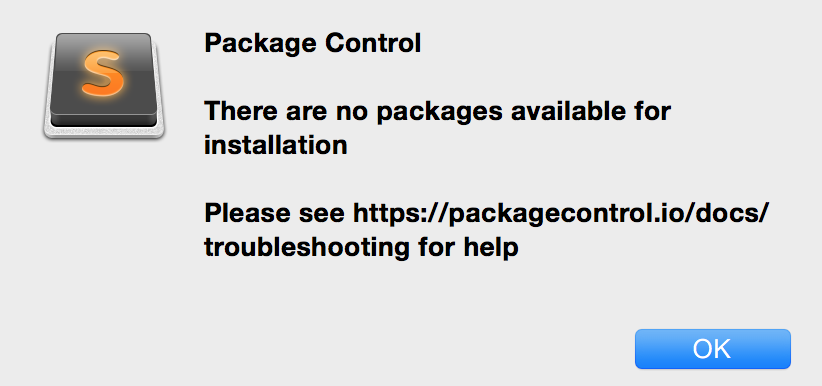

Sublime Text没啥好介绍的了，反正大家都是人手一个的，这个文主要想记录一下在使用sublimetext过程中遇到的一些坑，解决方案，好用的sublime text3的插件以及杂杂的一些个人tip，反正很杂就对了。

ping sublime.wbond.net，我ping的时候丢包100%。cd Documentspython -m SimpleHTTPServer 1111 &."channels": ["http://127.0.0.1:1111/Documents/channel_v3.json"]重启sublime生效，然后就可以正常使用package control了
注意：在修改settings以及使用的时候都要保持python服务器启动状态。
记下来以供参考，也供自己备份